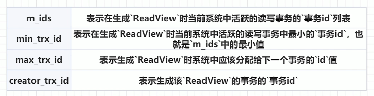

MySQL：MVCC与事务
前言
八股放在最后，前面讲讲八股的答案原理。
一、什么是MVCC
多版本并发控制（MVCC=Multi-Version Concurrency Control），是一种用来解决读 - 写冲突的无锁并发控制。也就是为事务分配单向增长的时间戳，为每个修改保存一个版本。版本与事务时间戳关联，读操作只读该事务开始前的数据库的快照（复制了一份数据）。mvcc解决的就是读写时的线程安全问题，线程不用去争抢读写锁（读写锁可参考：Java多线程：三、多线程锁、java锁的实现 | 颓废市民黄先生 (rengoku.top)）。
说到读写冲突和多线程并发控制，肯定也会涉及事务的隔离级别，即读未提交（可能脏读），读已提交（不可重复读），可重复读（可能幻读）。MVCC和事务隔离级别共同解决这些问题。
MVCC所提到的读是快照读，也就是普通的select语句。快照读在读写时不用加锁，不过可能会读到历史数据。
还有一种读取数据的方式是当前读，是一种悲观锁的操作。它会对当前读取的数据进行加锁，所以读到的数据都是最新的。主要包括以下几种操作：
select lock in share mode（共享锁）
select for update（排他锁）
update（排他锁）
insert（排他锁）
delete（排他锁）
MVCC采用的快照读，当前读来读取数据，那么什么是快照读和当前读？
快照读：快照读是指在读取数据时，读取的是某个一致性视图（Consistent View）中的数据，这个一致性视图反映了事务开始时刻数据库的快照。
什么是一致性视图？这里虽然说的玄乎，其实就是read view，待会儿在介绍mvcc实现原理中介绍。
当前读：当前读，是指读取操作获取的是数据的最新版本，即读取操作发生时数据库中该数据的实际状态。这种读取方式通常伴随着锁的使用，以确保读取的数据在事务处理期间不会被其他事务修改，从而保证事务的一致性和隔离性。
MVCC在MySQL的InnoDB引擎是默认实现的，无需配置其他内容。
二、MVCC实现原理
MVCC 的目的就是多版本并发控制，在数据库中的实现，就是为了解决读写冲突，它的实现原理主要是依赖记录中的版本链、undo 日志、Read View 来实现的。

在图中，有两个没见过的列，一个是trx_id，另外一个是roll_pointer。在MySQL中，除了我们显示的定义列，存储引擎还会隐式帮我们定义一些列，其中就存在trx_id，roll_pointer。下面逐一介绍。
trx_id：
在MySQL的InnoDB存储引擎中，trx_id是一个隐藏列，用于记录对该行数据最后一次进行修改（INSERT、UPDATE或DELETE）的事务的ID，或者InnoDB**通过递增max_trx_id（max_trx_id在read view中介绍）的值来生成新的trx_id**。当需要一个新的trx_id时，InnoDB会获取max_trx_id的当前值，然后将其加1，并将结果赋值给新的或修改的数据行的trx_id隐藏列。
roll_pointer：
回滚指针，用于找到上一个版本的数据，结合undolog进行回滚。
什么是read view？
在上边提到，MVCC会使用快照读，快照读读取的就是read view。当我们用select读取数据时，这一时刻的数据会有很多个版本（例如上图有四个版本），但我们并不知道读取哪个版本，这时就靠readview来对我们进行读取版本的限制，通过readview我们才知道自己能够读取哪个版本。
其中read view的字段：

m_ids：活跃的事务就是指还没有commit的事务。
max_trx_id：例如m_ids中的事务id为（1，2，3），那么下一个应该分配的事务id就是4，max_trx_id就是4。
creator_trx_id：执行select读这个操作的事务的id
介绍一下read view字段如何代表是否可读：
trx_id表示要读取的事务id
如果要读取的事务id等于进行读操作的事务id，说明是我读取我自己创建的记录，可以读。
如果要读取的事务id小于最小的活跃事务id，说明要读取的事务已经提交，那么可以读取。
max_trx_id表示生成readview时，分配给下一个事务的id，如果要读取的事务id大于max_trx_id，说明该id已经不在该readview版本链中了，故无法访问。
m_ids中存储的是活跃事务的id，如果要读取的事务id不在活跃列表，那么就可以读取，反之不行。
三、写博客的时候想的问题
1.为什么mvcc可以解决脏读，幻读的问题？
MVCC（多版本并发控制，Multiversion Concurrency Control）在MySQL的InnoDB存储引擎中，主要用于提高数据库的并发性能，并有效地解决脏读、不可重复读和幻读等事务隔离问题。以下是MVCC如何解决脏读和幻读问题的详细解释：
解决脏读问题
脏读是指一个事务读取了另一个事务未提交的数据。在MVCC机制下，每个事务在读取数据时，都会根据事务的隔离级别和当前时间戳（或事务ID）来生成一个“读视图”（ReadView）。这个读视图定义了哪些版本的数据对当前事务是可见的。由于MVCC会确保事务只能读取到已经提交的数据版本，因此即使有其他事务正在修改数据但尚未提交，当前事务也不会读取到这些未提交的数据版本，从而避免了脏读问题。
解决幻读问题
幻读是事务隔离中的另一个问题，它发生在同一事务中，当某个事务两次执行相同的查询时，由于其他事务的插入操作，导致第二次查询结果中出现了第一次查询中不存在的记录。MVCC通过以下方式解决幻读问题：
版本链机制：MVCC通过维护数据的版本链来记录每个数据行的修改历史。每次对数据的修改都会生成一个新的数据版本，并将旧版本保留在版本链中。这样，事务在读取数据时，可以根据读视图选择适合的版本进行读取。
读写隔离：在MVCC中，读操作不会阻塞写操作，写操作也不会阻塞读操作。这种读写隔离的机制避免了并发操作的冲突，使得事务可以在不锁定数据的情况下进行读取，从而减少了锁的竞争和提高了并发性能。
间隙锁（Gap Locks）：虽然MVCC本身不直接通过间隙锁来解决幻读问题，但在某些情况下（如可重复读隔离级别下），InnoDB会结合MVCC和间隙锁来防止幻读。间隙锁可以锁定一个范围内的记录间隙，防止其他事务在该间隙内插入新的记录。这样，即使其他事务尝试在已锁定的间隙内插入新记录，也会被阻塞，从而避免了幻读的发生。
间隙锁是InnoDB在可重复读（REPEATABLE READ）隔离级别下为了解决幻读（Phantom Reads）问题时自动采用的一种锁机制。它用于锁定一个范围内的间隙，即锁定那些不存在的记录之间的“空间”，从而防止其他事务在这个范围内插入新的记录。
一致性快照：MVCC通过创建每个读取数据的版本快照，使得每个事务都在一个一致性的快照中执行。这意味着在同一时间点，可以有多个事务并发的读取同一份数据，而不会相互干扰。这种一致性快照保证了事务读取数据的一致性，从而避免了幻读问题。
2.如果mvcc可以解决脏读、幻读、不可重复读的问题，为什么还需要提出事务隔离级别？
MVCC（Multi-Version Concurrency Control，多版本并发控制）是数据库管理系统（如MySQL中的InnoDB存储引擎）中用于实现事务隔离级别的一种技术。尽管MVCC在解决脏读、不可重复读和幻读问题上发挥了重要作用，但事务隔离级别的提出和存在仍然是必要的，原因如下：
- 隔离级别的多样性需求
不同的应用场景对事务的隔离性有不同的需求。事务隔离级别从低到高分为Read Uncommitted（读未提交）、Read Committed（读已提交）、Repeatable Read（可重复读）和Serializable（可串行化）。每种隔离级别都有其特定的应用场景和优缺点。例如：
- Read Uncommitted：允许读取未提交的数据，这可能导致脏读，但在某些特定场景下，如需要极高并发且对数据一致性要求不高的场景，可能会选择这种隔离级别。
- Read Committed：保证读取的数据是已提交的，避免了脏读，但可能出现不可重复读。
- Repeatable Read：MySQL InnoDB存储引擎的默认隔离级别，它通过MVCC和Next-Key锁等技术解决了脏读和不可重复读问题，但在某些情况下（如当前读）仍可能遇到幻读。
- Serializable：最高的隔离级别，通过强制事务串行执行来避免脏读、不可重复读和幻读，但会显著降低并发性能。
- MVCC的局限性
虽然MVCC在解决并发问题时非常有效，但它也有其局限性：
- 幻读问题：在可重复读隔离级别下，MVCC通过快照读可以避免幻读，但在当前读（如加锁的SELECT、INSERT、UPDATE、DELETE等操作）时，仍可能遇到幻读问题。这是因为当前读会读取最新的数据版本，而不是事务开始时的快照。
- 性能考虑：虽然MVCC提高了并发性能，但它也增加了系统的复杂性和开销。例如，需要维护多个数据版本、管理undo日志等。
- 灵活性和兼容性
事务隔离级别的提出允许数据库系统在不同的应用场景下提供灵活的隔离性保证。同时，它也保证了数据库系统与其他系统或应用的兼容性。例如，某些应用可能依赖于特定的事务隔离级别来保证其数据一致性和完整性。
- 标准化和可配置性
事务隔离级别是数据库管理系统中的一个重要概念，它已经被广泛接受并标准化。数据库系统允许用户根据实际需求配置不同的事务隔离级别，以满足不同的性能和数据一致性要求。
四、八股部分

关于24题中3个隐式字段，除了trx_id和roll_pointer，还有一个是row_id，在这里整理一下：
row_id
这是一个唯一的标识符，用于唯一标识一条行记录。当表没有显式定义主键或唯一索引时，InnoDB会使用row_id作为主键。
trx_id
事务ID，记录的是当前行记录是被哪个事务修改提交的。InnoDB会为每个开启的事务分配一个递增的ID，用于唯一标识一个事务。当某个事务修改了某个行记录时，就会在这个行记录的trx_id隐式字段中记录当前事务的ID。
roll_pointer
回滚指针，用于指向undo日志中该行记录的历史版本。当一个事务对某条记录进行修改时，会把该行记录先拷贝到undo日志中作为一个历史版本，然后再对该行记录进行修改，并使用roll_pointer指针指向undo日志中该行记录的历史版本。
24题中使用undo日志的体现：
- 构成版本链：每次对记录修改时会写入undo日志，而回滚指针将这些记录构成一条链表，供回滚指针进行回滚
- 实现多线程并发控制：记录未提交事务内容，可以作为其他事务的参考进行快照读
总结
MVCC是多版本并发控制，在MySQL的InnoDB引擎中是默认实现的。MVCC和事务隔离级别共同管理事务，尽可能的避免脏读、幻读的问题。
MVCC通过三个隐式字段（row_id、trx_id、roll_pointer）、版本链、undo日志、read view视图实现事务隔离。
在第三大节中，拓展了一下什么是间歇锁。
顺便把锁的博客放一篇：mysql的共享锁(S)、排他锁(X)、意向共享锁(IS)、意向排他锁(IX)的关系_is锁-CSDN博客